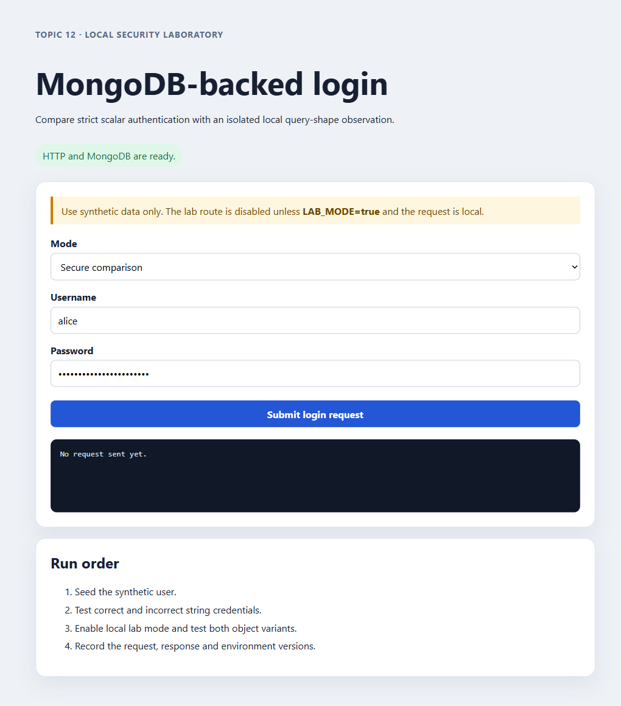
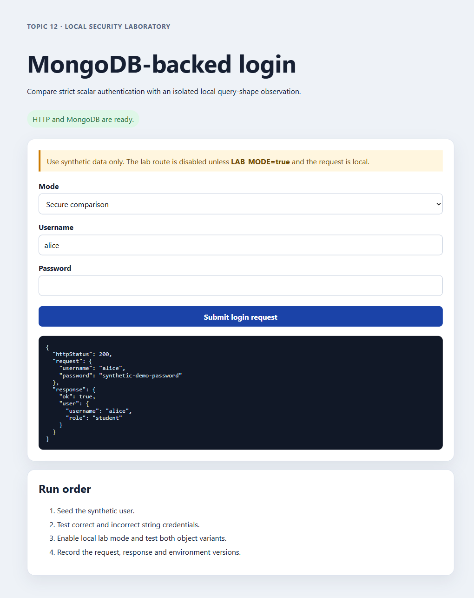
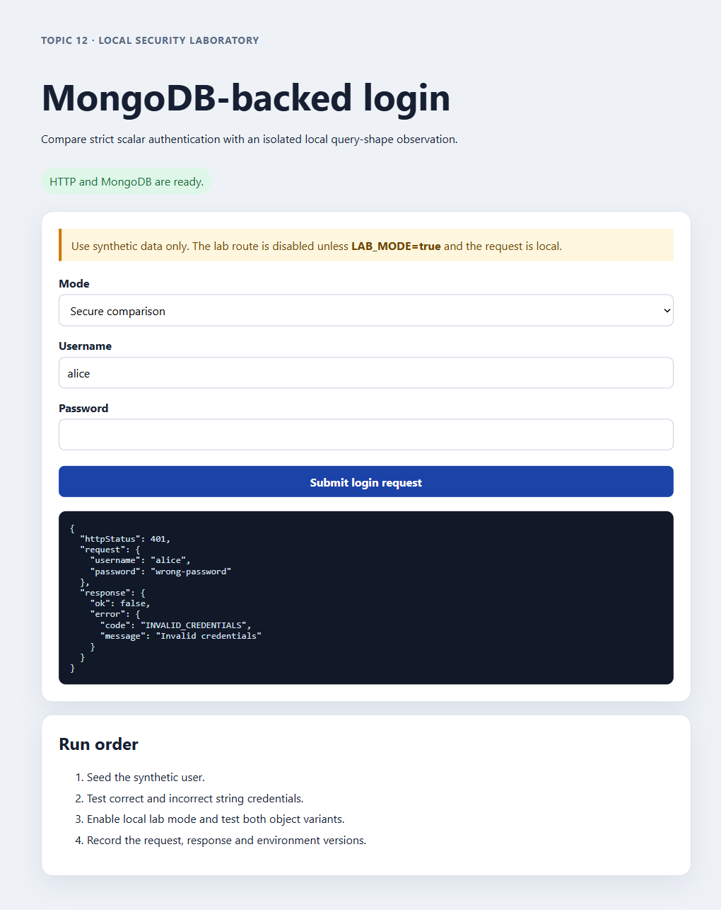
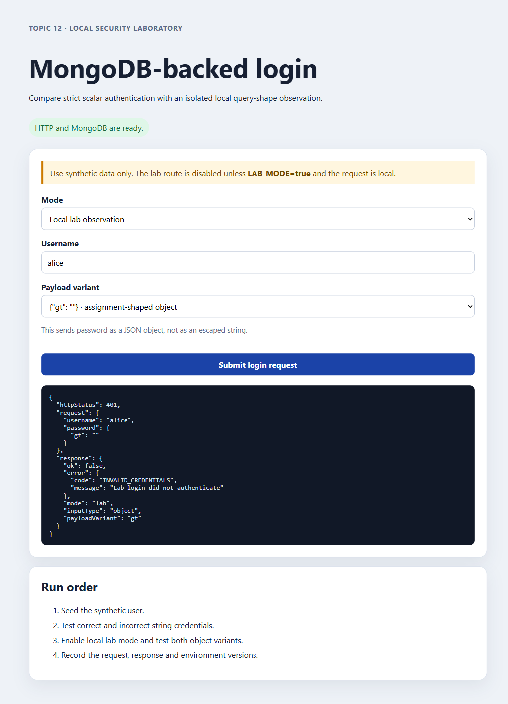
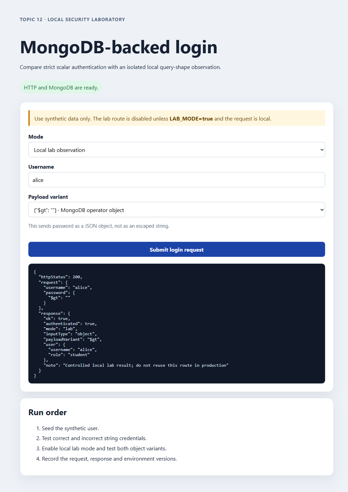
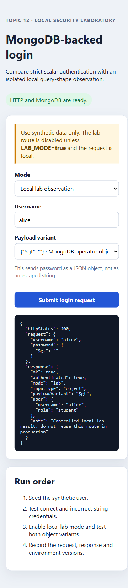
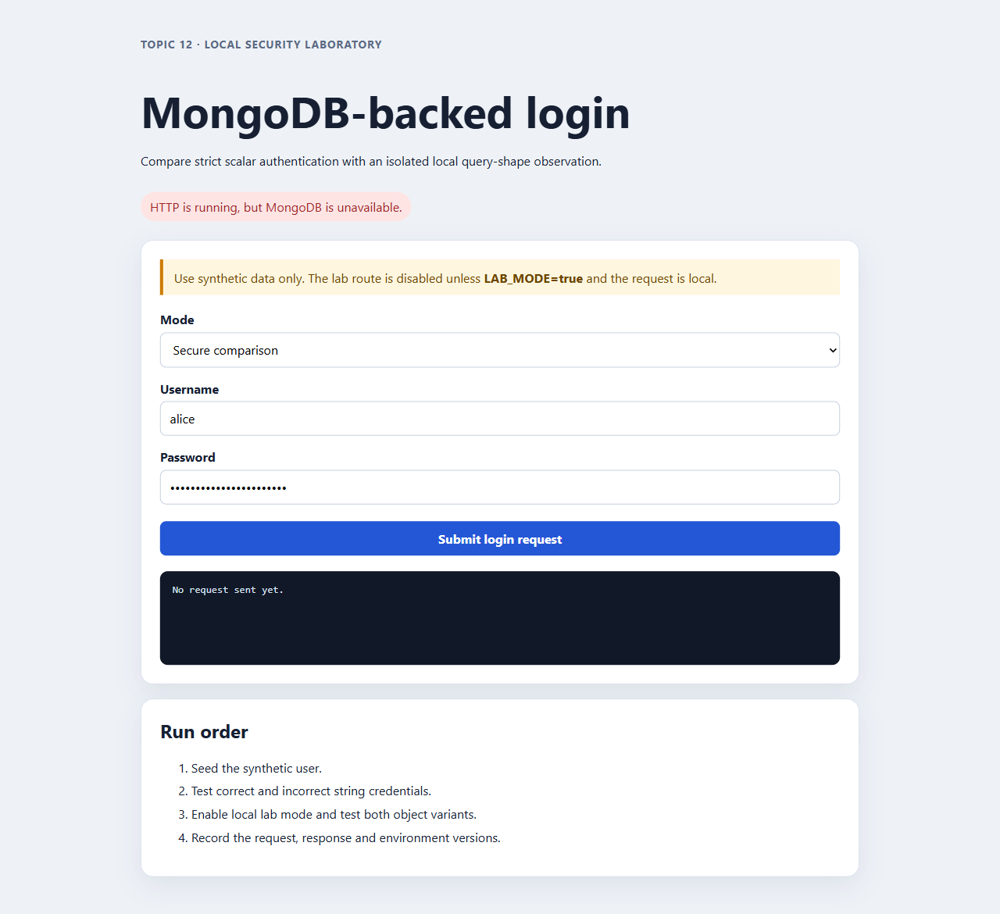
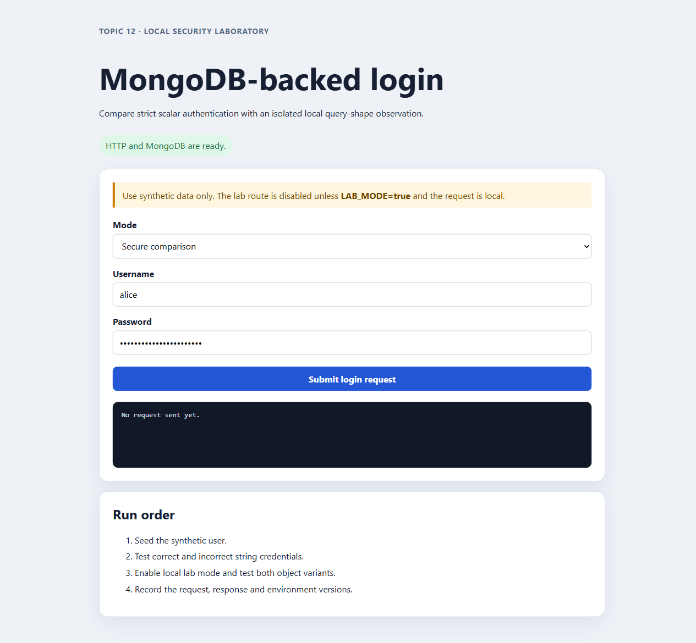

Final demo QA evidence
Modern Database Attacks · 2026-09-12 · local Docker/MongoDB run
Result
| Area | Observed |
|---|---|
| Automated tests | 12/12 PASS |
| Secure API matrix | 26/26 PASS |
| Lab API matrix | 29/29 PASS |
| Production/locality guards | 404 / 403 as expected |
| MongoDB recovery and app restart | Login restored |
| Documentation conversion | 9/9 Markdown pages have valid HTML siblings |
Payload comparison
{"gt":""} returned 401. The MongoDB operator shape {"$gt":""} returned 200 authenticated: true only on the intentionally vulnerable, loopback-only lab route. The secure route rejected both with 400 INVALID_INPUT.
Run command
docker compose -f docker-compose.yml -f evidence/final-demo-2026-09-12/docker-compose.port-workaround.yml up --build -d
docker compose -f docker-compose.yml -f evidence/final-demo-2026-09-12/docker-compose.port-workaround.yml run --rm app node scripts/seed.js --lab
docker compose -f docker-compose.yml -f evidence/final-demo-2026-09-12/docker-compose.port-workaround.yml run --rm -v "${PWD}\tests:/app/tests:ro" app npm run test:all
Evidence files
README/report · automated tests · secure API JSON · lab API JSON · guards JSON · resilience JSON · database JSON · npm audit · HTML check
Browser screenshots
{kind=link}

{kind=link}

{kind=link}

{kind=link}

{kind=link}

{kind=link}

{kind=link}

{kind=link}

Known findings
- Native MongoDB occupied host port 27017; the evidence uses 27018 and leaves the native process untouched.
npm audit --omit=devreports two moderate transitiveqsadvisories through Express 4.22.2./favicon.icoreturns 404; cosmetic.- With MongoDB stopped, health returns 503 but auth endpoints return generic 500 until recovery.
- Docker image
Config.Useris empty and therefore defaults to the base image user (root).